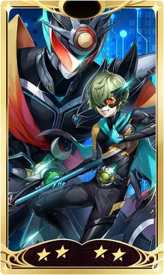

LEON Leo Kamiyama
Fonte: https://lufel.net/en/character/leon/ · letto il 2026-11-15 con il browser integrato (spoiler attivi) · Stato Global: rilasciato. Convenzione: nomi di skill, awareness, armi, Persona, set e stat lasciati in inglese come su lufel.net; condizioni ed effetti tradotti in italiano. Valori skill (personaggio 4★) = LV10 / LV10+Minds 5 / LV12 / LV12+Minds 5. Valori armi = refinement R0/R1/R2/R3/R4/R5/R6.
Scheda#
| Campo | Valore |
|---|---|
| Nome | Leo Kamiyama |
| Codename | LEON |
| Persona | Erytheia |
| Rarità / tipo | 4★ · Standard |
| Elemento | Nuclear |
| Posizione | Strategist |
| Ruolo (lufel) | Single Buffer |
| Tag (lufel) | Attack · Crit Mult · Shield · HP Cost |
| Resistenza / Debolezza | Res: Nuclear · Wk: Fire |
Character Review (lufel)#
- Buffer che aumenta enormemente ATK e CRIT DMG di un singolo bersaglio e mostra la più alta utilità tra le unità 4★.
- Con oltre 2500 ATK e la capacità di concedere più del 100% di CRIT DMG, offre prestazioni schiaccianti.
- La Skill 2 consuma il 30% degli HP, ma poiché il buff raggiunge la massima efficienza quando gli HP dell'alleato sono al 60% o meno, il bersaglio del buff deve subire gli attacchi nemici.
Pro - Può concedere un alto buff a CRIT DMG e ATK. - Si abbina bene a personaggi che diventano più forti al calare degli HP.
Contro - Il bersaglio del buff deve subire attacchi nemici per raggiungere la massima efficienza. - Aumentare il livello della Skill 2 può essere uno svantaggio.
Recommended Setup (lufel)#
Nota lufel: le impostazioni consigliate sono basate su contenuti futuri; alcune funzioni potrebbero non essere ancora disponibili (Revelation, Mindscape, ecc.).
- Revelation — Space: Trust (tooltip "Trust - Prosperity": quando usa skill sugli alleati, il danno di tutti i membri del party aumenta dell'8% per 2 round · "Trust - Power": all'inizio della battaglia aumenta l'Attack degli altri membri del party del 10%, non attivabile ripetutamente) · oppure Creation (tooltip "Creation - Reconcilation": all'inizio della battaglia aumenta il DMG Dealt dell'alleato con la SPD più bassa del 12%, non cumulabile) · Sun/Moon/Star/Sky: Prosperity (2-Set: danno subito −8% · 4-Set: entrando in battaglia recupera subito il 25% della carica HIGHLIGHT, non cumulabile) · oppure Power (2-Set: proprio Attack +12% · 4-Set: proprio Attack +10% ogni 6 turni (contano i turni di nemici e alleati), fino a 3 stack) · oppure Reconcilation (2-Set: Speed +6 · 4-Set: in combattimento HP, ATK, DEF +15%)
- Main Options — Sun: HP · Moon: Attack / HP · Star: Attack / HP · Sky: Attack / HP
- Sub Options — 1ª priorità: HP / Defense · 2ª: Attack · 3ª: "-"
- Recommended Stats — LV12: Attack 4064 · LV12+Minds 5: Attack 4465
- Battle Entry + — Eludi. Stat Buff · Labor 8% · Thieves Den 50LV +65 · Thieves Den 70LV +110 (o più) · Thieves Den Rating
- Priorità skill — 1º Skill 3 (MAX) · 2º Highlight (MAX) · 3º Skill 1 (livello 8) · 4º Skill 2 (livello 8)
- Mindscape (LV 5) — Rank Strengthening 1: HP 20% · Rank Strengthening 2: Attack 20% · Skill Enforce 1: Skill1 / HIGHLIGHT · Skill Enforce 2: Skill2 / Skill3
- Skill Rotation — A0: 3 › 2 › 3 › 2 › 3 › 2
- Notes (lufel) — La massima efficienza si applica quando gli HP dell'alleato sono al 60% o meno.
Skills (LV10 / LV10+Minds 5 / LV12 / LV12+Minds 5)#
Skill 1 — Atomic Smash (Nuclear · SP 20) Infligge danno Nuclear a 1 nemico pari al 170.8%/188.3%/177.8%/195.3% dell'Attack. Per ogni stack di Power of Friendship posseduto dal party, danno +10%.
Skill 2 — Justice Barrier (SP 20) Spende il 30% degli HP residui di 1 altro alleato per concedergli uno scudo pari all'80% degli HP spesi + 31.6%/31.6%/32.9%/32.9% dell'Attack di Kamiyama + 900/1095/1035/1230 per 2 turni. Concede inoltre 1 stack di Power of Friendship.
Skill 3 — Ultima Booster (SP 24) Aumenta l'Attack di 1 alleato (diverso da Kamiyama) del 19.5%/19.5%/20.3%/20.3% per 2 turni. Per ogni stack di Power of Friendship del bersaglio, Attack +20% dell'Attack di Kamiyama in più (fino a 1516.7/1672.1/1578.9/1734.3).
HIGHLIGHT (cooldown 4 turni) Concede il numero massimo di stack di Power of Friendship a 1 alleato (diverso da Kamiyama) per 2 turni. Se gli HP residui del bersaglio sono sotto il 60%, li ripristina fino al 60% (cura limitata al 200% dell'Attack di Kamiyama). Attack +15% dell'Attack di Kamiyama (fino a 585.6/645.6/609.6/669.6) per 2 turni.
Passiva — Energy Recharge: al termine di Justice Barrier, ripristina HP pari al 100.0% dello scudo residuo.
Passiva — Full Power: Start!: danno critico degli alleati +45.0% quando hanno 2 stack di Power of Friendship.
Awareness#
- A0 — Hyper Hero Time! (talento base): concede 1 stack di Power of Friendship agli alleati quando i loro HP scendono al 75% o meno; fino a 2 stack. Quando gli alleati hanno Power of Friendship, Attack +6% dell'Attack di Kamiyama (fino a 120/180/240, che aumenta ai livelli 1/50/70) per 1 turno.
- A1 — Intense Link: Defense degli alleati +10% quando hanno Power of Friendship.
- A2 — Undying Justice: dopo aver usato skill sugli alleati, proprio Attack +25%.
- A3 — Serious Action: aumenta di 2 i livelli di skill di Atomic Smash e Justice Barrier.
- A4 — Hero's Journey Home: Highlight Enhanced: danno critico del bersaglio +25% per 2 turni.
- A5 — Self-Discipline: aumenta di 2 i livelli di skill di Ultima Booster e Thief Tactics.
- A6 — Turning the Tables: usando una skill su un alleato con HP sotto il 60%, danno critico +25% per 1 turno.
Stats#
- Base (LV1): HP 232 · ATK 69 · DEF 43 · Speed 100
- Hidden Ability LV7: ATK % 29%
- LV80 (HP / ATK / DEF): A0 2610 / 780 / 490 · A1 2640 / 789 / 496 · A2 2670 / 798 / 501 · A3 2700 / 807 / 507 · A4 2731 / 816 / 512 · A5 2760 / 825 / 518 · A6 2791 / 834 / 524
Armi esclusive (valori R0/R1/R2/R3/R4/R5/R6)#
5★ Final Buster — HP 2299 · ATK 687 · DEF 432 - Aumenta l'Attack del 30.0/30.0/39.0/39.0/48.0/48.0/57.0%. - Dopo aver usato una skill su un alleato, concede al bersaglio 1 dei seguenti buff: Attack +16.0/21.0/21.0/26.0/26.0/31.0/31.0% (1 turno) · danno critico +16.0/21.0/21.0/26.0/26.0/31.0/31.0% (1 turno). - Se il bersaglio ha 2 o più stack di Power of Friendship, concede entrambi i buff e aumenta gli effetti scudo concessi da Kamiyama del 10.0%/13.0%/13.0%/16.0%/16.0%/19.0%/19.0% in più per 1 turno.
4★ Justice Lance — HP 1839 · ATK 550 · DEF 346 - Aumenta lo scudo dell'8.8%/8.8%/11.4%/11.4%/14.0%/14.0%/16.6%. - Dopo aver usato una skill su un alleato, Attack +9.0%/11.7%/11.7%/14.4%/14.4%/17.1%/17.1% per 1 turno. - Per ogni 20% di HP perso dal bersaglio, Attack +20%.
Attribute Mindscape (lufel: introdotto in KR V5.2, forse non ancora su Global)#
- Mindscape Synergy: nessuna consigliata (slot vuoto su lufel).
- Mindscape Combat Skill: nessuna consigliata (slot vuoto su lufel).
Recommended Combination (lufel)#
- Sezione non presente nella pagina lufel di questo personaggio.
Recommended Parties (lufel)#
- Sezione "Recommended Parties Example" presente ma vuota nella pagina lufel (nessun party elencato).
Nomenclatura#
- lufel: "Leo Kamiyama" (codename LEON), slug URL
leon. Stati/risorse: Power of Friendship. - Nelle descrizioni lufel "critical damage" / "CRIT DMG" = Crit Mult.